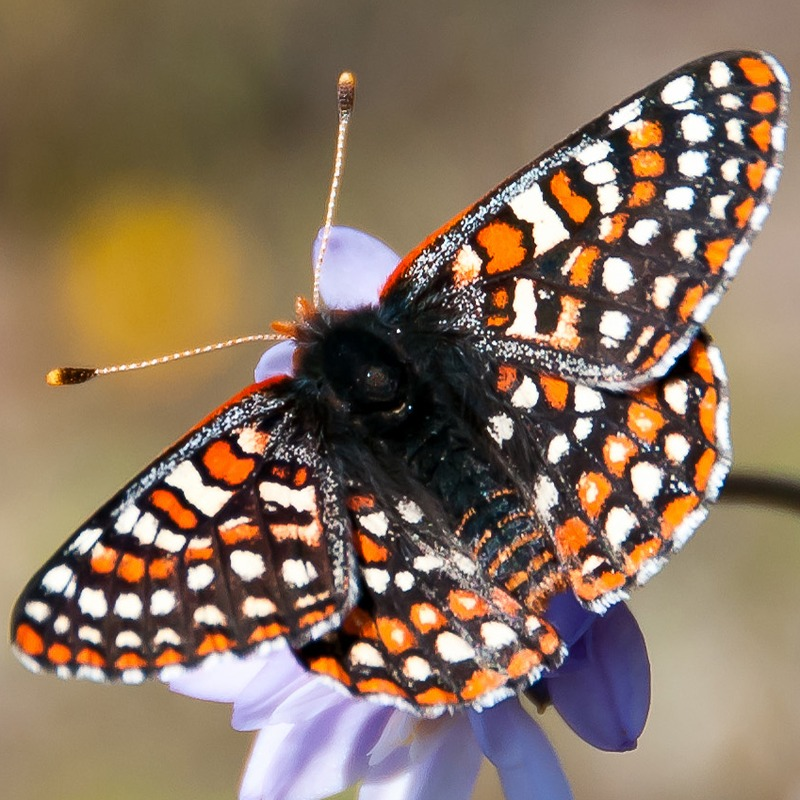
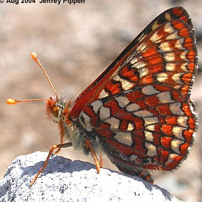

Euphydryas editha
- Common name
- Edith's Checkerspot
- Family
- Nymphalidae
- Family common name
- Brush-footed butterflies
- On the wing
- E April to L August, peaks in July at higher elevations.
One generation.
- Habitat
- Ocean bluffs, desert hills, ridgetops in sagebrush scrub, and rocky outcrops above treeline.
- Larval host:
- Indian paintbrushes, chinese houses, louseworts and others.
- Nectars on:
- Camas, stonecrop, phacelia, pussypaws, spring gold and other composites, strawberry and others.
- Abundance
- LR-U
Range Map
Seasonality